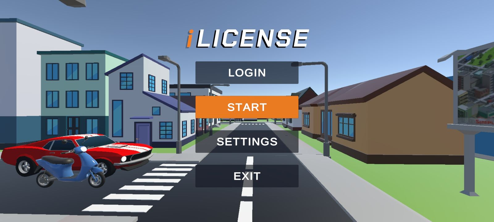

Projects / Capstone
iLicense
A game-based driver’s license simulation, built as a team capstone project at Southern Luzon State University.
Overview

- Role
- Lead Developer
- Project
- Team capstone, Southern Luzon State University
- Platform
- Mobile app
- Status
- Completed and deployed
- Built with
- Unity, C#, Blender, Firebase, SQLite
- Recognition
- Best Capstone Project
iLicense is a mobile app that guides players through the Philippine driver’s licensing process, from student permit to non-professional license. Instead of only reading about each step, players move through them: preparing requirements, taking the written exam, waiting out the permit period and finishing with practical driving.
It was developed as a team capstone project. I was the Lead Developer. The project was completed and deployed, and it was recognized as Best Capstone Project.
What the app covers
Screens from the finished app
My role
Lead Developer
- Led development activities and coordinated the work across the team
- Carried out systems analysis and UI/UX design
- Gathered requirements and turned them into the system’s scope
- Prepared the technical documentation
- Supported iterative testing throughout development
Technology
Unity and C#
The app was built in the Unity engine with C#.
Blender
Blender was used for parts of the 3D asset work. Not every asset in the game was created by me.
Firebase and SQLite
Support administrator monitoring by tracking user quiz activity and related progress.
Testing and outcome
Testing was iterative throughout development, and the system was tested by users before completion.
The result is a completed and deployed application, recognized as Best Capstone Project.
iLicense was a team project. This page describes my role as Lead Developer and does not claim sole authorship of the work.